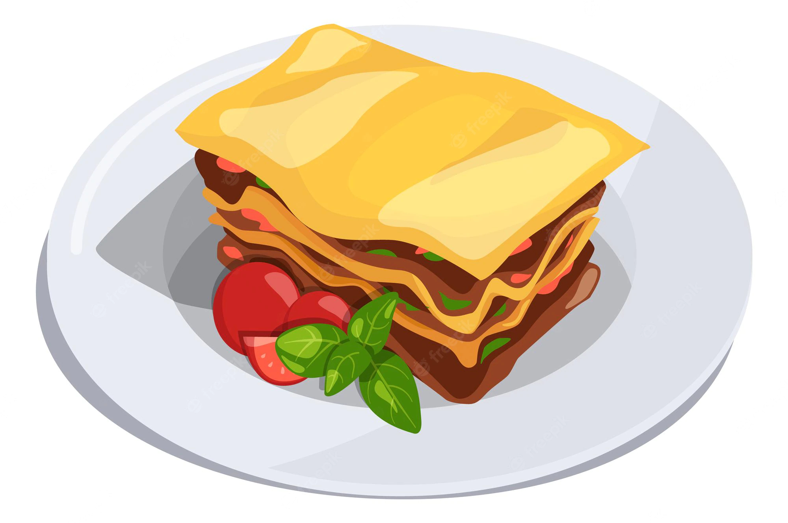

Lasagna

Description
Two paragraphs in great detail describing how delicious lasagna is, the difficulty it is to gather the resources to make it, and its intensely fought origin through out the ages of man kind.
Ingredients
- Pasta sheets
- Ground meat of choice (or meat substitue)
- Premade sauce (marinara or alfredo)
- Complementary vegetables (mushrooms, olives, etc) dependending on sauce and meat choice
- Jack Cheese
- Mozzarella Chese
- Ricotta Cheese
Steps
- Boil pasta sheets
- Season meat taste
- Brown meat. Drain fat/oil
- Mix sauce with meat. Cook until thick
- Mix vegatables with sauce
- In a oven-safe container, layer the inside of container's bottom with a layer of pasta
- Add half of meat-sauce combination evenly on top of pasta sheet
- Add layer of jack/mozarella cheese
- Add another layer of pasta
- Make another layer with remaining meat-sauce
- Add another layer of jack-mozarella
- Preheat oven to 300 degrees Farenheit
- Once oven has reached ideal temperature, leave oven safe container with lasagna in oven for about 30 minutes or unit cheese browns
- Once lasagna is ready, carefully remove from oven. Let food cool for a few minutes. Serve on plates
- Add Ricotta cheese to slices served to person's preference
- Enjoy